-

Maletsunyane Falls -
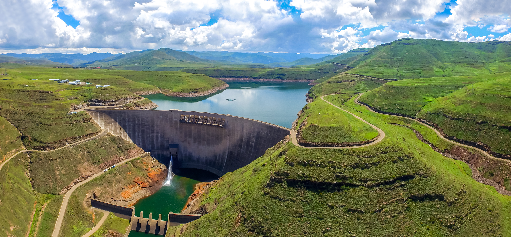
Katse Dam -
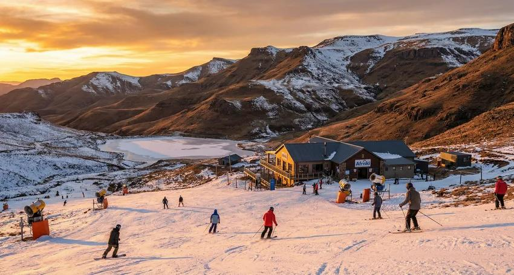
Afriski Mountain Resort -
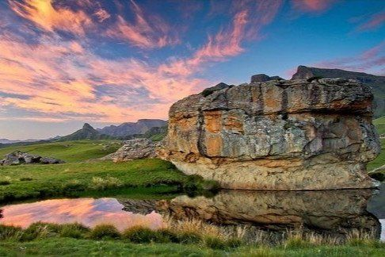
Tsehlanyane National Park -
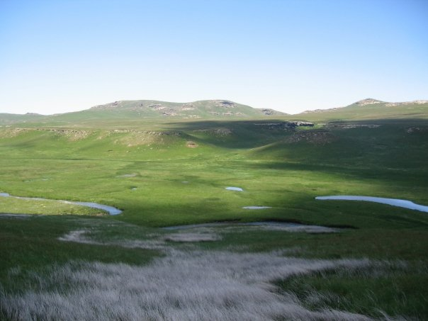
Sehlabathebe National Park -
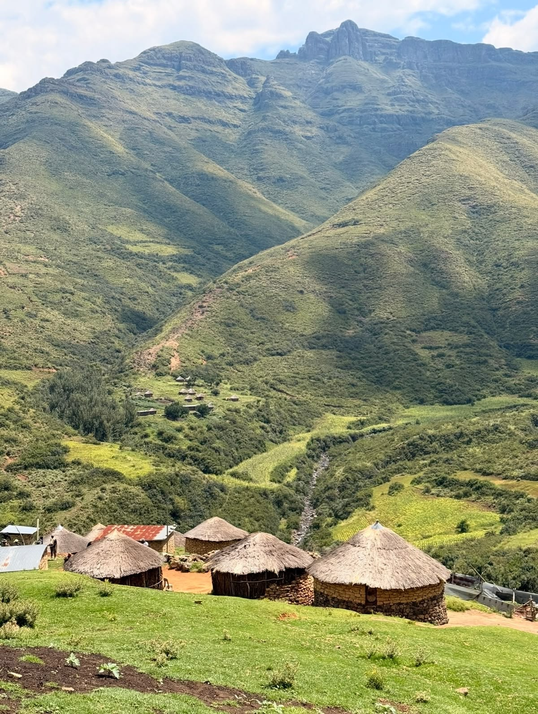
Ribaneng Falls -
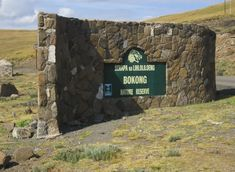
Bokong Nature Reserve -
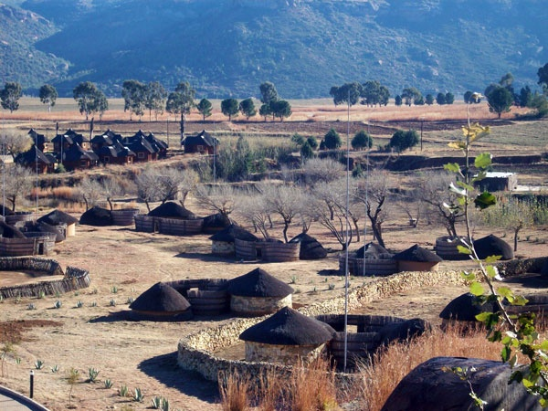
Thaba Bosiu -
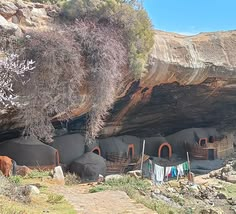
Ha Kome Caves -
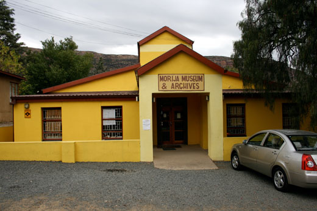
Morija Museum -
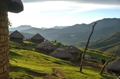
Malealea -
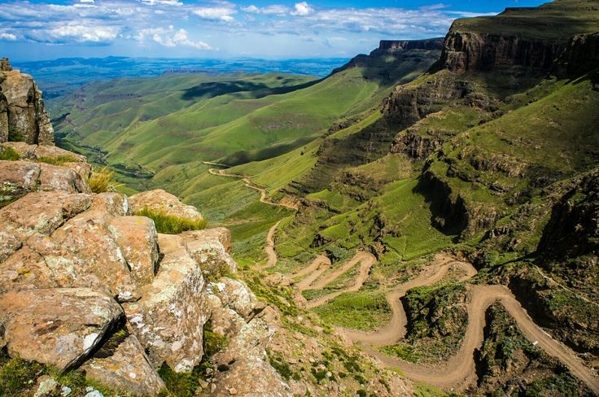
Sani Pass -
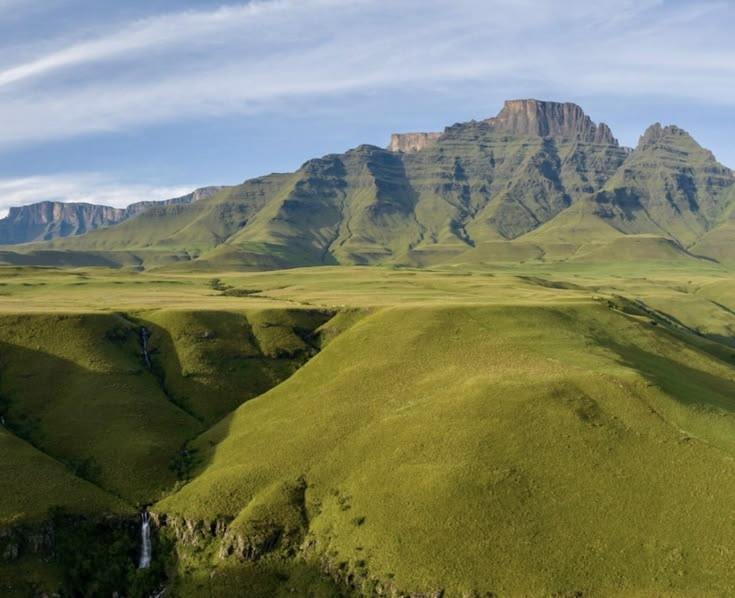
Thabana Ntlenyana -
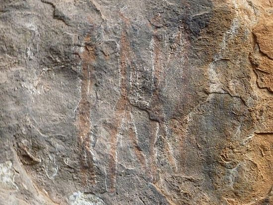
Liphofung Cave -
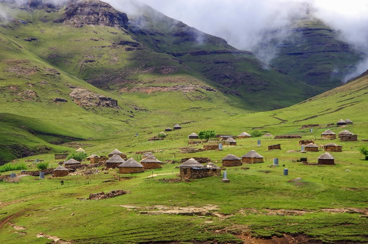
Leribe Highlands -
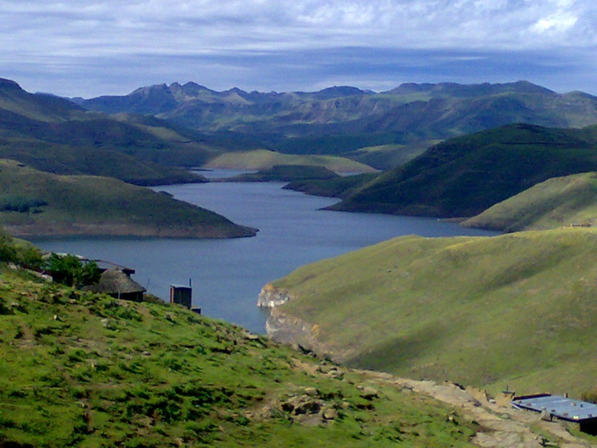
Mohale Dam -
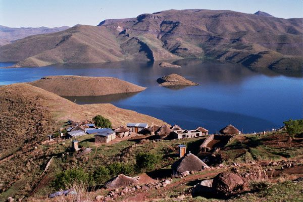
Metolong Dam -
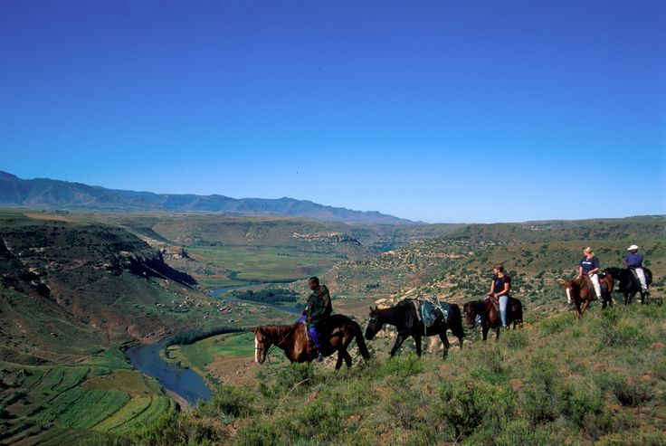
Basotho Pony Trekking -
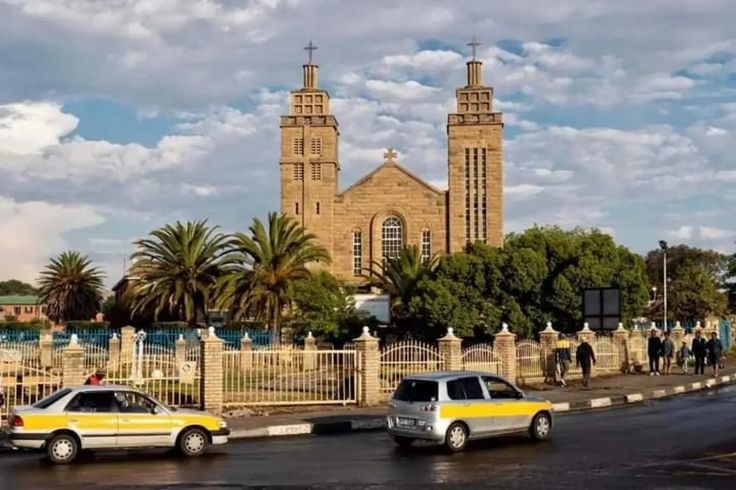
Maseru City -
Maseru City Centre -
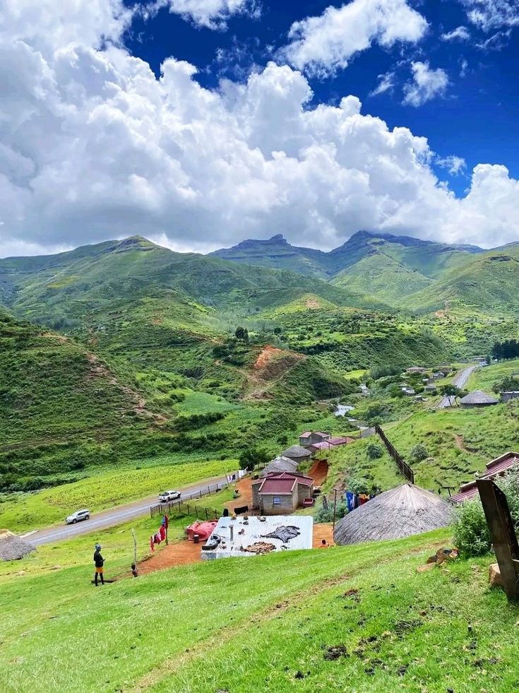
Qacha's Nek -
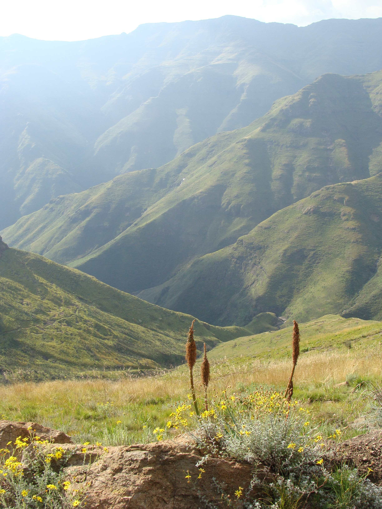
Quthing -
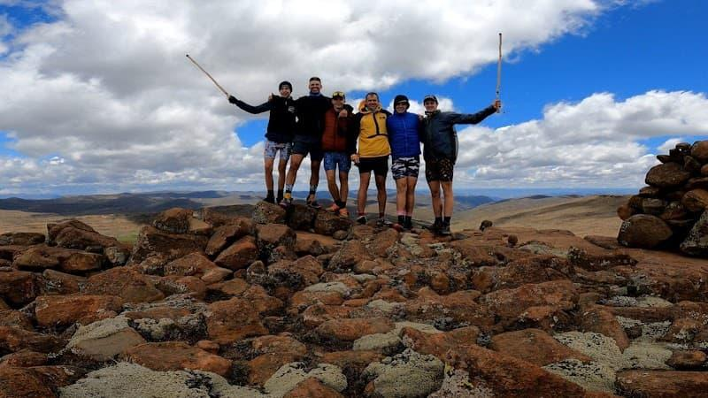
Berea Countryside -
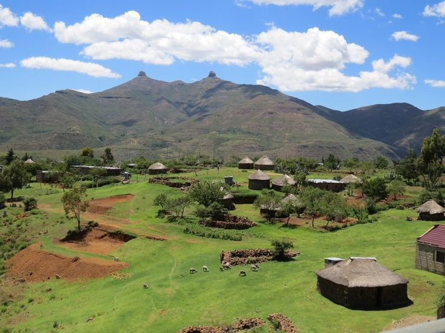
Semonkong Highlands